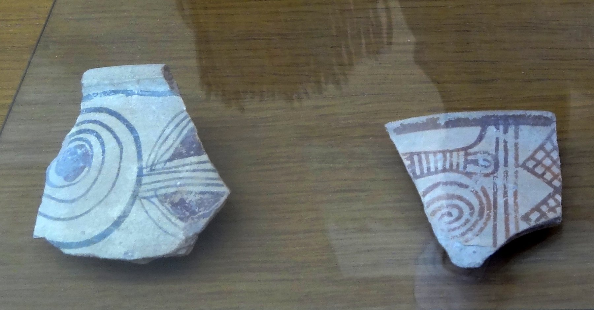

Philistine Bichrome Pottery

- Find Name
- Philistine Bichrome Pottery
- Description
- Philistine bichrome pottery is the red-and-black painted ware of the early Philistines, decorated with spirals, metopes, triglyphs, birds, and geometric panels on a white slip. It followed the locally made Mycenaean IIIC monochrome ware (Philistine 1) of the 12th century BC and dominated at Tel Miqne-Ekron and the other Philistine cities during the 11th century BC, before fading as Philistine culture assimilated into local Canaanite styles. The ware is found at all five Philistine cities - Ashkelon, Ashdod, Ekron, Gath, and Gaza - and marks the arrival of the Aegean Sea Peoples whom the Bible calls Philistines.
- Historical Period
- Iron Age I, c. 12th-11th centuries BC
- Evidence Class
- Contextual
- Interpretations
- Bichrome pottery is the archaeologist's fingerprint for the Philistines: where it appears, the Sea Peoples settled, giving a material map of the Philistine pentapolis behind the stories of Samson, Saul, and David. It is a ware type, not a single object, so it has no single discovery date or museum home - and it proves Philistine presence, not any individual biblical episode. Its Aegean style also confirms the Bible's own account that the Philistines came from across the sea (Amos 9:7 speaks of Caphtor).
- Alternative Names
- Philistine 2 Ware
- Related Places
- Related Books
- Related Events
- Scripture Illuminated
- Biblical Significance
- Bichrome ware lets readers see the Philistines of Judges and Samuel as a real, datable people with a distinctive Aegean culture on the coastal plain - not a literary invention.
- Artifact Date
- c. 1150-1000 BC
- Discovery Location
- Philistine cities: Ashdod; Ashkelon; Ekron (Tel Miqne); Gath; Gaza
- Timeline Era
- Conquest and Judges
Awaiting Review Not yet checked against scholarly sources. Treat its claims as provisional until this entry is reviewed. About verification
Sources: https://www.academia.edu/143157894/The_Philistines_in_the_Books_of_Samuel_An_Archaeological_Perspective_by_Ann_E_Killebrew_2025
https://encyclopedia.thefreedictionary.com/Philistines
https://encyclopedia.thefreedictionary.com/Philistines
Last reviewed: not yet reviewed